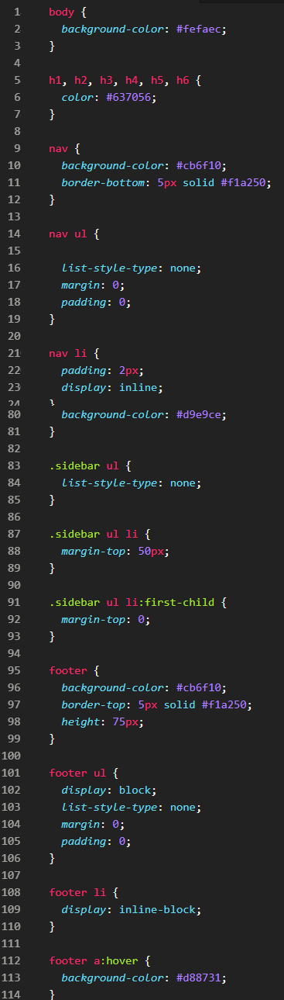
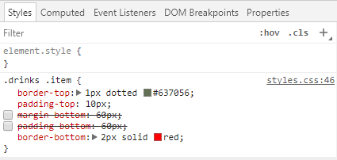

Expand this section to compare your work.
You can also compare your styles.css file with our answer key if the image is too difficult to read.
Cluttered web pages overload the brain. Spacing and layout helps draw attention to different parts of the website by making it easier for users to "see". We will continue our work on LadyDev Bar & Grill by applying spacing and layout concepts.
This section will help guide you through the following steps:
Borders help define sections and helps the user by grouping like items together. You will explore different border properties to bring definition to your webpage.
Select a border color to use between the navigation bar and menu. We'll use the same border color between the menu and the footer.
Create a style definition for nav, add a property for the bottom border and set your selected color as the background. The property will look like border-bottom: 5px solid #f1a250;.
We already have a style that applies nav, footer, but in this case, we have different styles to apply to both nav and footer. By following best practices for cascading styles, define the nav style after the style for nav, footer.
To define styles for the same element, we set it up like a pyramid. We define the foundation of style rules that target a larger selector (like nav, footer) then add rules for a smaller selector (like nav).
Repeat for the footer except use a top border.
The top border property is border-top.
Turn your attention towards the drink menu by creating a style for class="item". Follow best practices for where to create the style based on selectivity rules.
.item after the global styles for selectors based on HTML elements, but before .small-plates.
Define borders between each drink in the drink menu by adding a dotted top border to each item in the list. In the style for class="item", apply a thin dotted top border. The style will look like
styles.css
.item {
border-top: 1px dotted #637056;
}
Add a border radius to the images in the drink menu. Add this new property to the existing style you already created to resize the images. By setting the value "50%", you make a circular border around the image.
img. Add border-radius: 50%; to it.
Save your file and view in Chrome. Looking good!
The Box Model defines spacing around elements. You will apply Box Model concepts to add whitespace to LadyDev Bar & Grill. Refer to the CSS Cheat Sheet to help.
margin and padding properties to "0".
This is the ul style.
Add padding between the list items in the navigation bar by declaring a new style and adding the padding property to look something like
styles.css
nav li {
padding: 2px;
}
padding: 2px; means add 2px of padding on all 4 sides of the element. It's the same as
padding-top: 2px;
padding-right: 2px;
padding-bottom: 2px;
padding-left: 2px;
That looks nice. We can use the same style but for the footer by adding it as part of a selector list. Apply the same style to the footer.
nav li by adding the footer li selector. The selector the style becomes nav li, footer li.
To make the navigation list items display horizontally, add display: inline; to nav li, footer li style.
Add padding between the hyperlinks in the navigation bar. Declare a style for nav a and add the padding property there. We want 6px on the top and bottom, but 20px on the right and left.
Group your selectors by global to more specific. Declare the style for nav a before the style for nav a:hover.
We can use shorthand properties to help by defining all 4 sides on the same property like this padding: 6px 20px;.
A commonly used mnemonic to remember the order of the values is "TROUBLE". Learn about it at CSS-Tricks.
Add display: inline-block; to nav a to align the hyperlinks on the same horizontal line.
The nav a styles look mighty nice. Let's also apply it to the footer's a tags.
nav a by adding the footer a selector. The selector the style becomes nav a, footer a.
Give the social icons a little extra space by setting the height to 75px. Add height: 75px; to the existing style for footer.
One last update for the footer! The hover color for the navigation bar might look nice applied to the footer. Go ahead and apply the same style for the hover to the footer.
nav a:hover by adding the footer a:hover selector. The selector the style becomes nav a:hover, footer a:hover.
Save your file and view your page in Chrome.
The heading for the drink menu, labeled "Menu", needs to be aligned above the drink list a little better. Looking in index.html we see "Menu" is in a h2 tag inside a section with class="drinks". Create a selector that only changes the "Menu" text to have a 5px margin all around.
h2 inside the class="drinks" so that we don't apply the style to all h2 elements. Target the "Menu" text only by defining styles using the selector for .drinks h2.
The images in the drink menu are far too close the dotted top border line. Let's give it a little space by adding a 10px top padding to each drink item.
.item.
The drink list items need a little breathing room. Add a 60px bottom margin between each drink item.
Why use margin instead of padding? Refer to the box model image in the CSS Cheat Sheet. Notice the difference where space gets added. You can see for yourself by opening Chrome DevTools, adding a bottom border and bottom padding in the Styles tab, and watching where space gets added. The styles you add in DevTools won't save. Mentors are here to help.

We want to display the text to the right of each image. To do so, we want the image in each drink item to float to the left. Add a style to the img selector to float: left;
The text for the drink items are a little too close to the image. Create a little breathing room by adding a 20px margin to the right and left of the image.
img, add the margin property and set value to 0 20px.
Most eye-catching websites have a hero image. Let’s learn about background properties and use what we learned about absolute and relative sizing and apply it to the hero image.
Open index.html and find the section containing the text containing title of the web page, "LadyDev Bar & Grill". Because we want our hero image to fill the entire title area, in styles.css declare a style for class="hero" and set the height to 600px.
Add a background image to hero section by adding
styles.css
background: url("../images/hero.jpg") no-repeat center top;
Your title text might not stand out so well any more. We'll fix that up in a bit.
Save your file and view your page in Chrome. Nice job, smarty pants!

Why did we have to add no-repeat center top to the image? We used shorthand properties to specify the image shouldn't repeat, center the image, and display image from top.
But we want it to expand across the entire width of the page. Let's resize it. In the same style for class="hero", add background-size: cover; after the background property.
The text on the hero image is squished against the top of the image. Open index.html to find a div with class="hero-text". Create a selector targeting the class .hero-text and set a top padding to 125px.
We want the text to only display on half of the image, and not take up the entire width of the image. Add the style width: 50%; to allow the text only 50% of the width of the browser tab.
We want the drink menu and small plates menu as two columns next to each other. We will use the power of CSS Grid to help us out.
Let's first clean up some spacing in the small plates section. Like the "Menu" section, we want the heading labeled "Small plates" to have a little space. To the "Small plates" header, add a margin with 5px on top and bottom, and 0px on the left and right.
h2 inside the class="small-plates". We can use the shortcut notation to specify 5px top and bottom margin and 0px left and right margin. To the selector for .small-plates h2 set the style margin: 5px 0;.
Take advantage of the shorthand notation we learned to clean up the styles for margin-top, margin-left, and margin-right defined for the small plates list items.
Remember the mnenomic "TROUBLE"? We can apply it here. We want 50px top, 15px right, 15px left, and 0px bottom margin. The approach is different depending on whether you used the :first-child pseudo class or + adjacent sibling combinator.
For the pseudo class, apply the short hand 50px 15px 0 15px to margin. The pseudo class will override margin-top from the .small-plates li. This is why we define the styles for the pseudo class after the style for all the elements in the list.
For the adjacent sibling combinator, apply the short hand 0 15px to margin. The style for the adjacent sibiling combinator will override margin-top from the .small-plates li. As with the psuedo class, this is why we define the style specifically for adjacent siblings after the style for all the elements in the list.
Now let's use CSS Grid to align the drinks and small plates menus. In index.html, notice the drinks menu and small plates menu are both children of a parent main with class="grid-container". We will target this class for grid layout.
In styles.css, declare a style for class="grid-container" in styles.css below your styles for class="hero". Add style display: grid;.
We want the drinks menu on the left with 75% width allocated to it. Drinks are, of course, most important. We want the small plates menu on the right with the remaining width allocation to it.
Create a grid with 2 columns with specified width by adding grid-template-columns: 75% auto;. Your style should look like
styles.css
.grid-container {
display: grid;
grid-template-columns: 75% auto;
}
Save your file and view in Chrome. You have two columns! 
Feel free to share a screenshot on Slack so we can all celebrate together!
Compare your styles.css against the answer key for your work so far. It might look a little different depending on the color palette you chose.
You can also compare your styles.css file with our answer key if the image is too difficult to read.
Mozilla Developer Network Box Model documentation
Mozilla Developer Network Display documentation